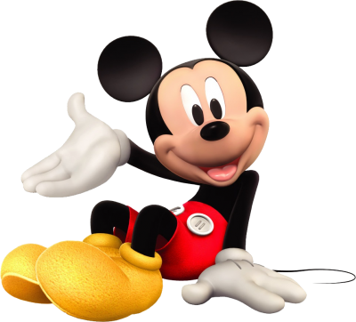

Topolino, conosciuto negli Stati Uniti e in molti altri Paesi come Mickey Mouse, è un personaggio immaginario dei fumetti e dei cartoni animati creato il 16 gennaio 1928 da Walt Disney e Ub Iwerks, icona stessa della Walt Disney Company e della cultura popolare mondiale.
| Altezza | Peso |
|---|---|
| 150cm | 40kg |